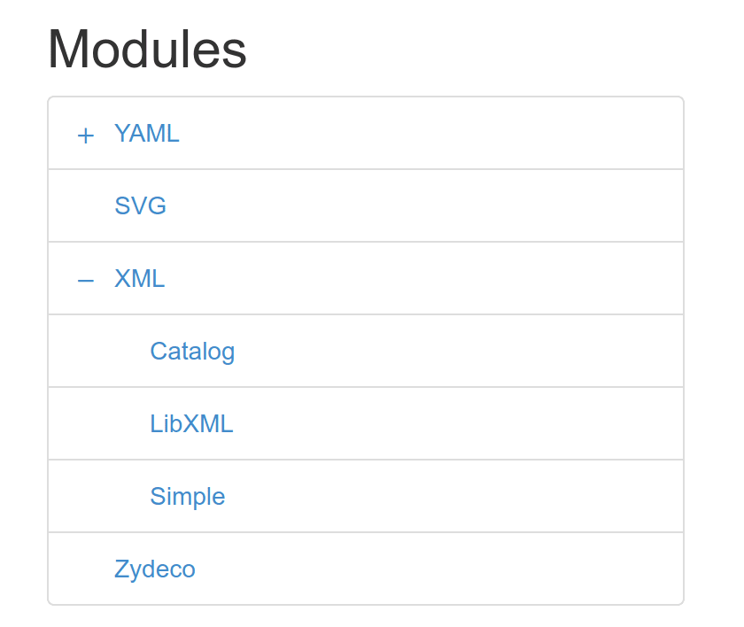
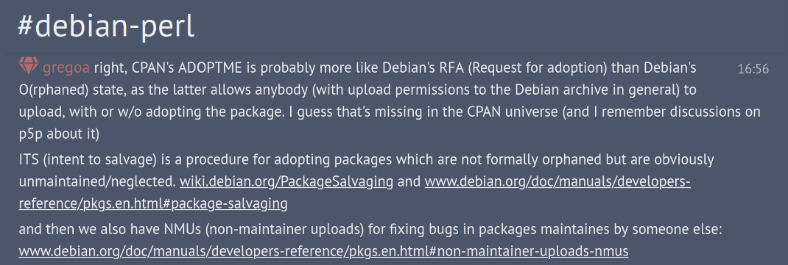

## Tib
Perlin' for 10 years
Background: C, Assembly, Python, Free Software, Linux
i (still) have no idea what i'm doing
Early (Perl) contributions: - tryperl.pl 👋🏻 - perlres 📋
BLOGGING A LOT ✏️
And overally active in Perl community: - Speaking at conferences 💬 - Even organized one (The Ephemeral Miniconf) 😶🌫️ - Contributing to other's code 🤝
A bunch of CPAN modules... just enough to be taken seriously at PTS 😂 ([CONTRA](https://metacpan.org/author/CONTRA))
A little detour by Alien::* 👽
Also overally interested in build systems ⚒️ continuous integration🏃♂️ and package management 📦
More recent contributions: - Github Action to upload to CPAN 💪 - `cpx`: a `npx`-like for CPAN 🤓 - Perl interpreter (e.g. dev releases) 🧐 - Perl logo (part of the "core team") 🐪 - CPANSec (topic "ecosystem") 🦆 - Test::Smoke (new maintainer) 💣
Now fast forward to today
Doin'
## Study ecosystem (CPANSec) - CPAN dependency confusions - Local::* should not be indexable - CPAN::Namespace::CheckVisibility - CPAN namespace vacuum - CPAN starjacking - CPAN stealing namespaces - ...
## PAUSE PenTesting (CPANSec) - PAUSE hack'n'snack - Containerized PAUSE (on top of "PAUSE Bootstrap")
## PAUSE docs (CPANSec) - Local:: - ADOPTME/FIRSTCOME - Various updates (and questions)
## P5P - "Busy releaser" (5.41.4, 5.41.6, incoming 5.42.0) - Reviewing releasing procedure (with others) - A few code contributions
## Test::Smoke - Fixed FTP syncer - Made Snapshot syncer functional and better - Drop PerlIO/StdIO from being first class citizens? - smokecurrent.patches
Thinkin'
## CPAN::Index::Spec - Ensure all CPAN indexes behave the same
## CPAN::META::Spec - Propagate EXE_FILES/script_files to META?
## MetaCPAN TreeView - Treeview per package?

## CRAN-like Umbrella Packages - This is what Task::Kensho does! - Useful? Reasonnable? Do more?
## Perl and CPAN future - Do more with less
It means...
## CPAN Orphaned ala Debian? - Anyone (with a "sponsor") can upload - Or a "lieutenant" can upload? - Any idea to fight the inertia without hurting authors

## CPAN "Lieutenants" - Respected veterans manage (with strict contract) a CPAN namespace subtree
## CPAN "Mentors" - Optimize newcomers experience and retention
## CPAN Patch Tooling - A security layer for inactive modules - Very early discussions
Followin'
## Perl supported platforms
## CPANTesters
And as a conclusion
^ Preparing some "chartreuse"